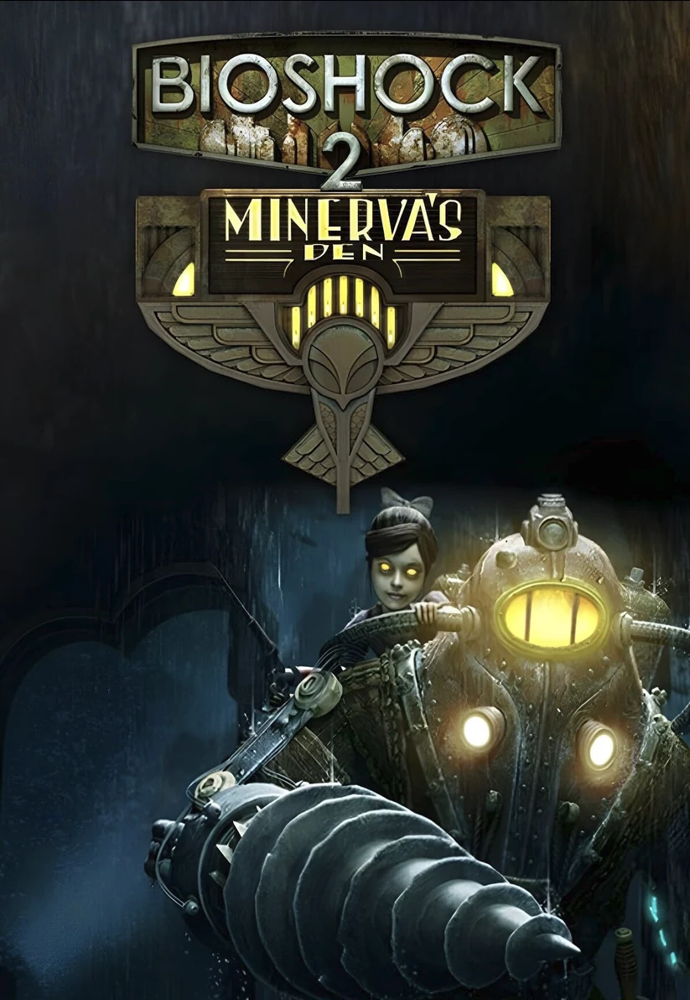

BioShock 2

Featured project / 2010
BioShock 2
I contributed first-person cinematic scripting for several beats including some key story moments over multiple levels on BioShock 2. Later in development I redesigned a struggling Outer Persephone level that had initially been outsourced. My work included rethinking the mission objectives and its playable Little Sister perspective.
I also designed The Thinker, the concluding level of the Minerva’s Den expansion.
Work samples
Outer Persephone
Selected environments, gameplay moments, and the level layout.
BioShock 2 expansion · 2010

Minerva’s Den
I designed The Thinker, the concluding level of the Minerva’s Den expansion. The gallery below features selected screenshots from the level.
↑ Back to project overview